| NOM FR | TYPE 1 | TYPE 2 | COURBE | DESCRIPTION |
|---|---|---|---|---|
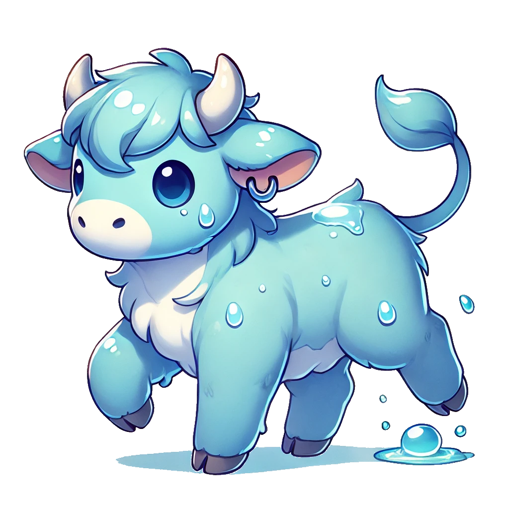Velido |
 Eau Eau |
POWER | Un petit veau. | |
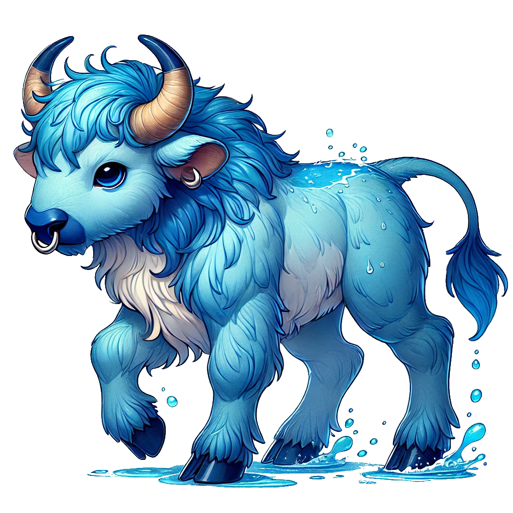Bofelido |
Eau |
POWER | Un boeuf. | |
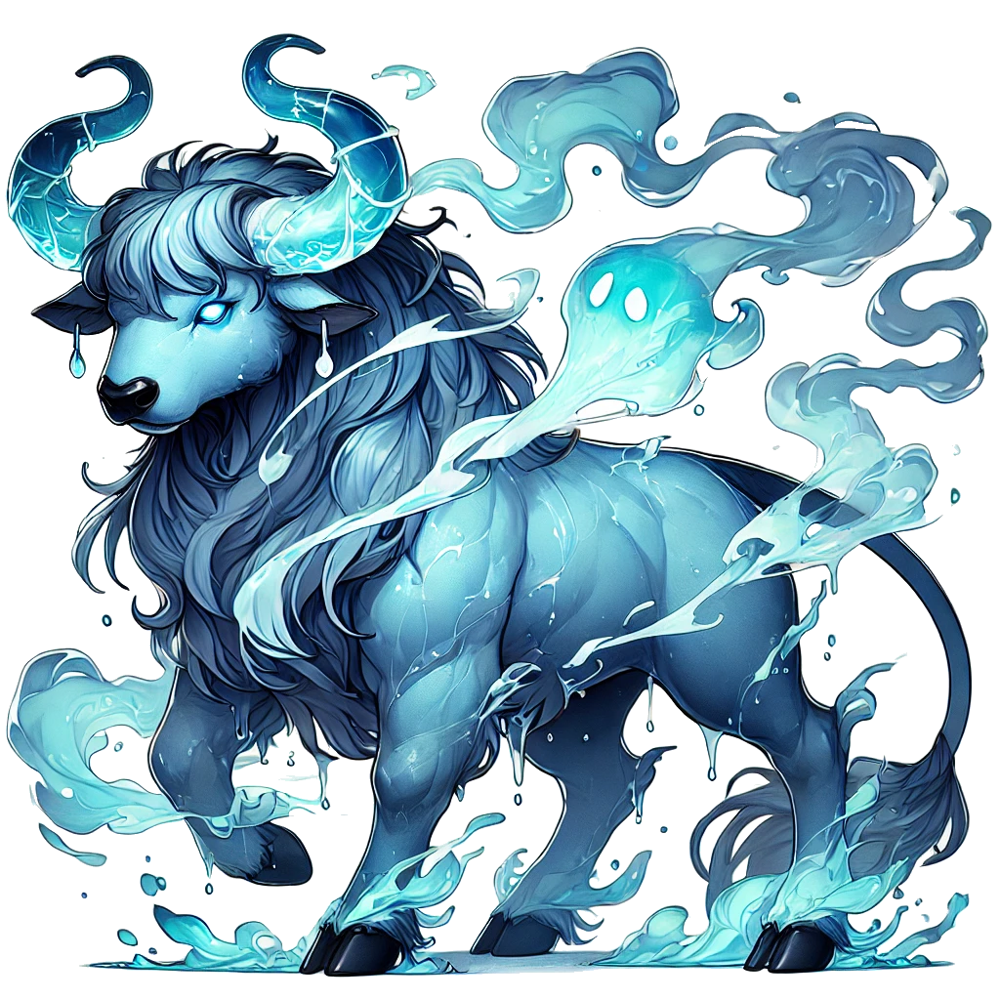Taurodo |
Eau |
 Fantôme Fantôme |
POWER | Un taureau spectral. |
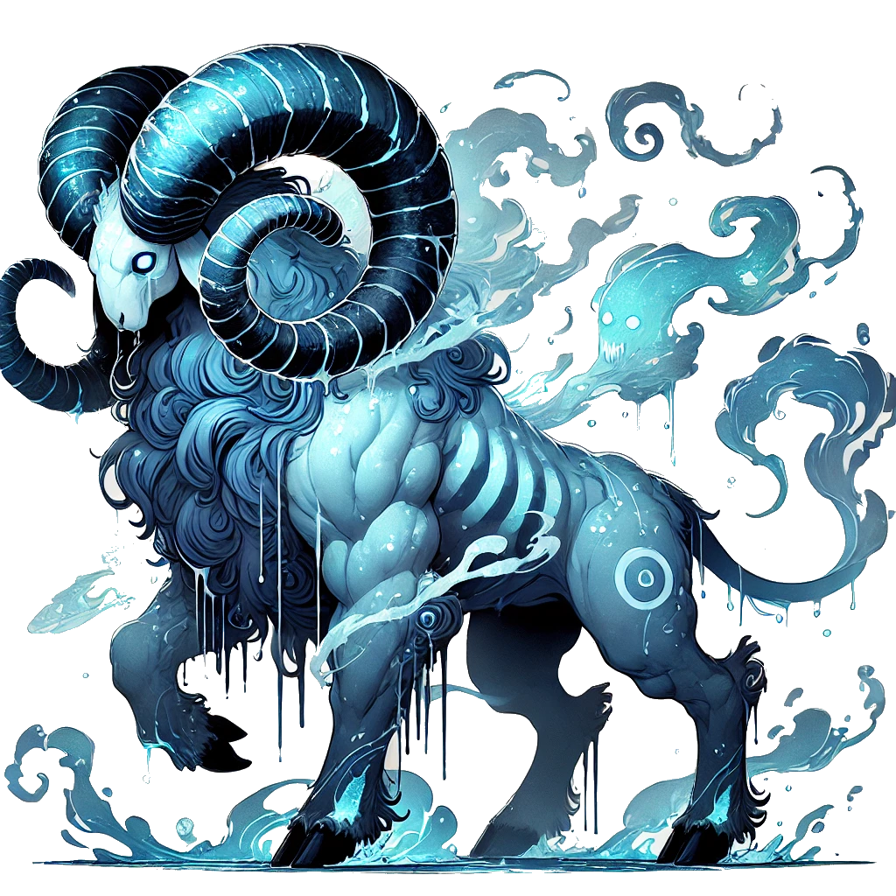Béhémodo |
Eau |
Fantôme |
POWER | Le taureau géant Béhémoth, maître des mers. |
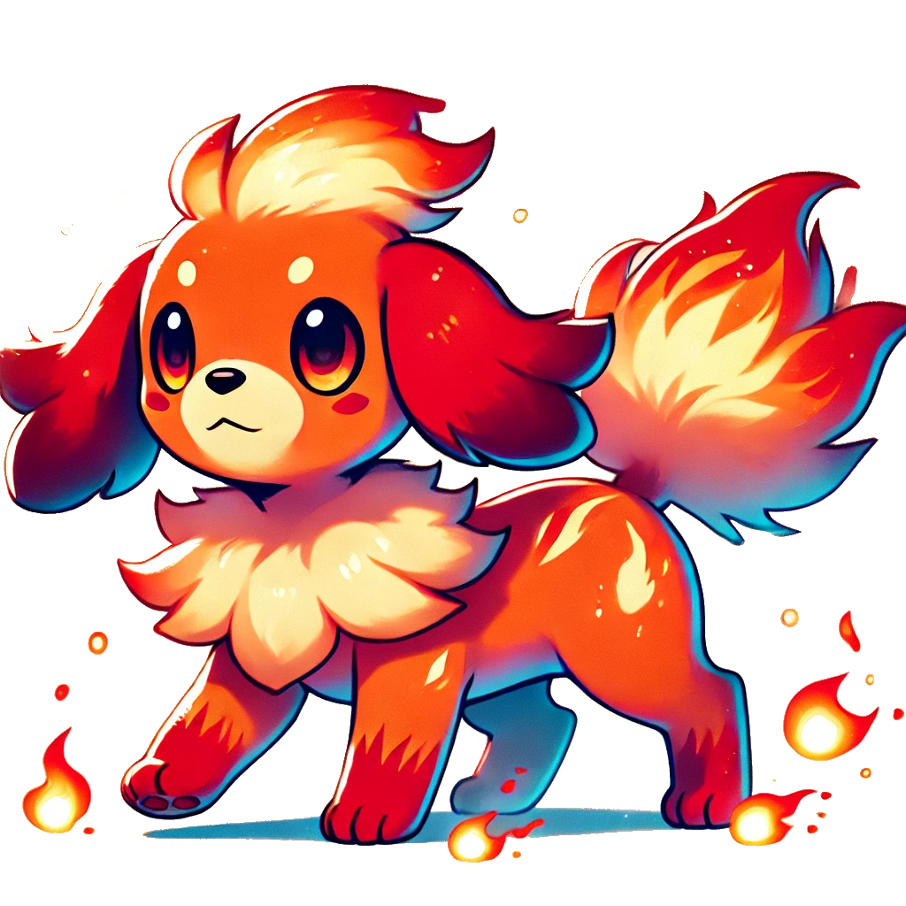Caniflam |
 Feu Feu |
POWER | Chien de compagnie agréable, il a pour habitude d'aider son dresseur à réchauffer les plats. | |
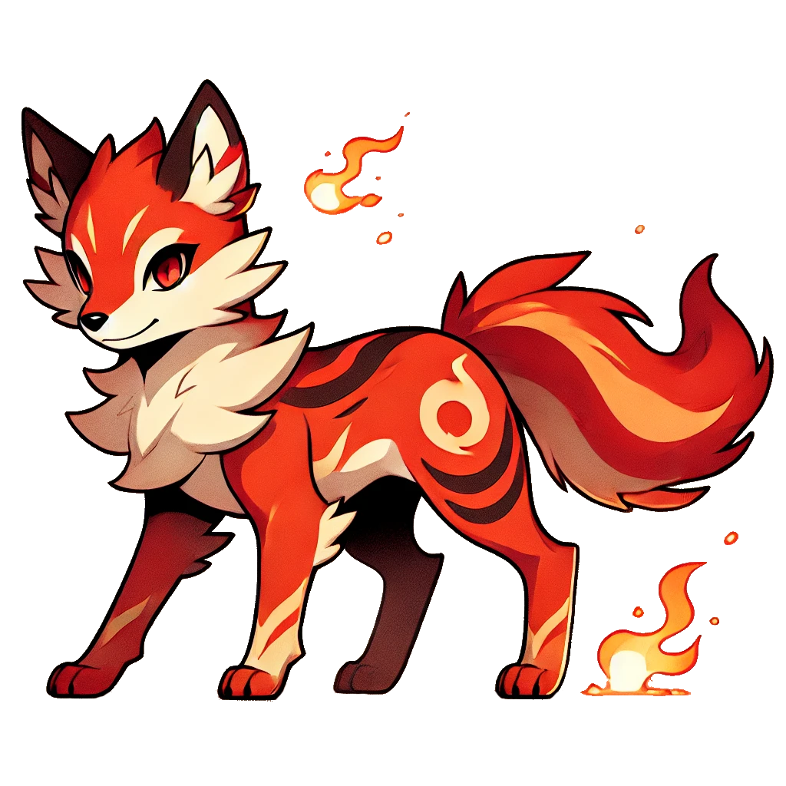Lupufeu |
Feu |
POWER | Ce loup de feu s'isole dans des grottes sombres, pour ne pas détruire les récoltes. | |
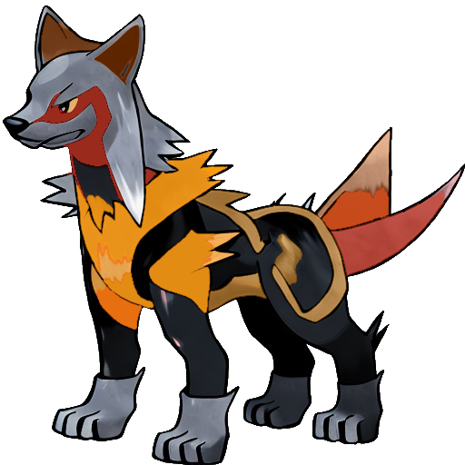Inferloup |
Feu |
 Métal Métal |
POWER | À force d'incinérer les portes en métal à son simple passage, il a fini par fusionner avec celles-ci. |
 Gévauloup Gévauloup |
Feu |
Métal |
POWER | Ce loup garou légendaire utilise ses chaînes et son feu ardent pour dominer les forêts voisines. |
| Vampillon |  Air Air |
POWER | Une chauve-souris avec des petites ailes. | |
| Vampaile | Air |
POWER | Une chauve-souris avec des grandes ailes. | |
| Vampoison | Air |
 Poison Poison |
POWER | Un petit vampire vénimeux. |
| Vampyroi | Air |
Poison |
POWER | Un vampire terriblement vénimeux. |
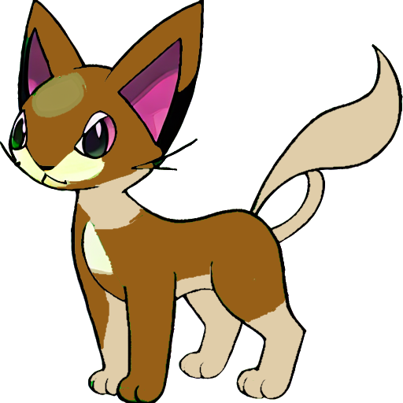Chatibou |
 Terre Terre |
POWER | Un petit chat adorable qui passe la majorité de son temps sous terre. | |
 Sablynx Sablynx |
Terre |
POWER | Ce lynx de terre creuse de vraies galeries souterraines, pour étendre son territoire. | |
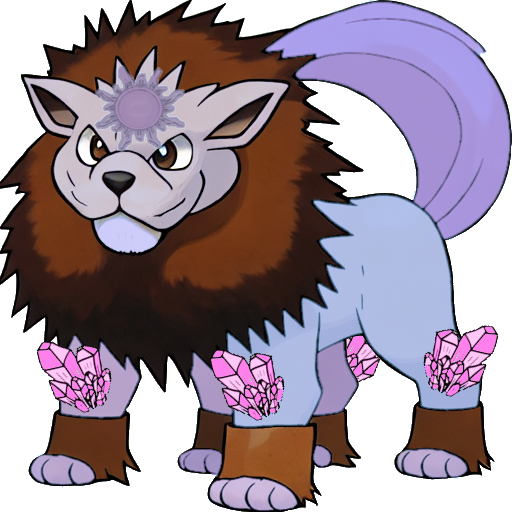Magilion |
Terre |
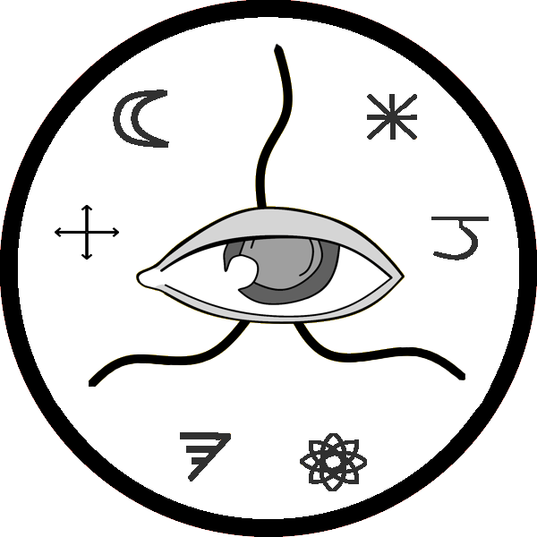Magie |
POWER | Majestueux lion, il a développé des pouvoirs magiques après avoir quitté ses galeries. |
 Matermage Matermage |
Terre |
Magie |
POWER | Le mythique sphinx, adorateur d'énigmes et débordant de magie. |
| Aquarius | Eau |
POWER | Elementaire d'eau. | |
| Léviathan | Eau |
POWER | Monstre légendaire. | |
| Pyrio | Feu |
POWER | Elementaire de feu. | |
| Phénix | Feu |
POWER | Phénix. | |
| Sylphia | Air |
POWER | Elementaire de vent. | |
| Zéphyr | Air |
POWER | Dieu du vent (cheval). | |
| Terria | Terre |
POWER | Elementaire de terre. | |
| Saterra | Terre |
POWER | Tigre de terre (sa). | |
| Renardent | Feu |
LEGENDARY | Renard de feu | |
| Solenos | Feu |
Magie |
LEGENDARY | belenos+soleil : (Renard) dieu du soleil, qui soigne. |
| Mistriel | Air |
LEGENDARY | Aigle inspirant la force du mistral et la tranquilité du ciel | |
| Oranis | Air |
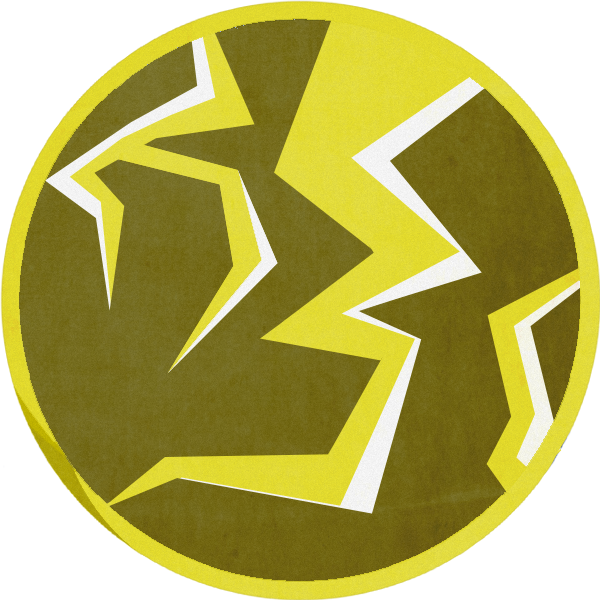Foudre |
LEGENDARY | Taranis : dieu du ciel et des orages. |
| Oloro | Eau |
LEGENDARY | Cygne d'eau | |
| Sifflana | Eau |
Poison |
LEGENDARY | Cygne noir associé à la déesse celte Dana. |
| Cerforet | Terre |
LEGENDARY | Cerf de la forêt | |
| Foresus | Terre |
LEGENDARY | Esus+Forêt | |
| Araignard | Poison |
Métal |
COMMON | Petite araignée avec un poignard. |
| Mygadague | Poison |
Métal |
COMMON | Mygale avec une dague. |
| Tarensabre | Poison |
Métal |
COMMON | Tarentulle avec un sabre. |
 Corbandit Corbandit |
Air |
 Poing Poing |
COMMON | Corbeau. |
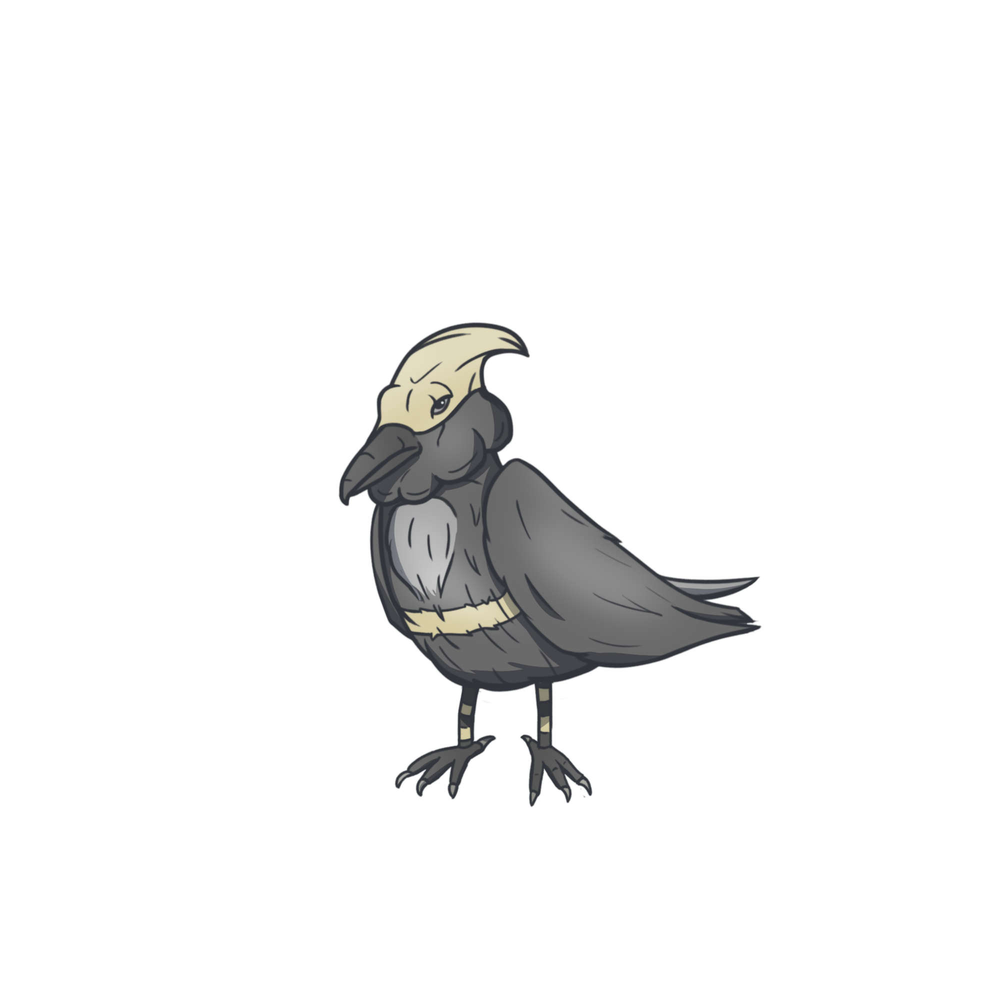Corbrigand |
Air |
Poing |
COMMON | Corbeau. |
 Corbachef Corbachef |
Air |
Poing |
COMMON | Corbeau. |
| Marcaclair | Terre |
Foudre |
QUICK | Marcassin électrique. |
| Sanglirage | Terre |
Foudre |
QUICK | Sanglier électrique. |
| Tourchonnerre | Terre |
Foudre |
QUICK | Le célèbre tourc'h, un sanglier blanc immortel. |
| Glourson |  Glace Glace |
COMMON | Ourson glacé. | |
| Oursberg | Glace |
Eau |
COMMON | Ours iceberg. |
| Sinistros | Fantôme |
COMMON | Chien noir dont les aboiements sont présages de mort. | |
| Orthos | Fantôme |
Terre |
POWER | Chien fantômatique à 2 têtes qui aspire les âmes des courageux aventuriers qui osent l'approcher. |
| Cerberos | Fantôme |
Terre |
POWER | Chacune des 3 têtes de ce monstre lui permet de scruter le passé, le présent et le futur. |
 Lavipère Lavipère |
Feu |
Poison |
COMMON | Petite vipère de lave. |
 Magmamba Magmamba |
Feu |
Poison |
COMMON | Mamba fait de magma. |
| Ecuyeur | Fantôme |
Métal |
COMMON | Défunt écuyer rempli de courage. |
| Cavafroi | Fantôme |
Métal |
COMMON | Cavalier d'effroi, massacrant les voleurs et défendant les bonnes gens. |
| Papyrith | Fantôme |
POWER | Papyrith est une momie enveloppée dans des bandages de parchemin anciens. On dit qu'il est né d'une âme perdue dans les temps anciens et qu'il erre à la recherche de sa véritable destination. | |
| Grimustre | Fantôme |
Métal |
POWER | Grimustre est une momie qui a acquis une armure en acier forgée à partir d'anciennes épées et armures médiévales. Son apparence évoque un guerrier revenu de la tombe pour protéger des secrets anciens. |
| Licheroi | Fantôme |
Métal |
POWER | Licheroi est la forme ultime de cette lignée d'admon. Il a une allure imposante, avec une armure en acier gravée de motifs médiévaux. On raconte qu'il est le gardien des mystères et des trésors du passé. |
| Burroque | Terre |
COMMON | Burroque est un petit âne doté d'une crinière hirsute et de grands yeux expressifs. Il porte un harnais médiéval en cuir sur son dos, rappelant les bêtes de somme de l'époque. Sa queue est touffue, et il a une petite corne sur le front. Malgré sa stature modeste, Burroque est travailleur et résilient, transportant des charges lourdes à travers les terrains accidentés. | |
| Destriaval | Terre |
Métal |
COMMON | Destriaval est un puissant destrier médiéval évoquant le cheval Mallet. Il a une armure en acier qui recouvre son corps, lui conférant une protection supplémentaire. Sa crinière est brillante et ses sabots sont robustes. Destriaval est noble et loyal, souvent associé aux chevaliers de l'époque médiévale. Il est capable de charger avec une grande force et de terrasser ses ennemis en combat. |
| Ragoncier | Eau |
Métal |
COMMON | Ragoncier est un admon aquatique qui ressemble à un ragondin. Il est connu pour sa curiosité insatiable et sa capacité à collecter des objets rares et précieux dans les rivières et les lacs. Sa fourrure est dense et imperméable, ce qui lui permet de nager longtemps sous l'eau sans se mouiller. Les gens du Moyen Âge croyaient que la fourrure de Ragoncier avait des pouvoirs magiques de guérison. |
| Castorbard | Eau |
Métal |
COMMON | Castorbard est la forme évoluée de Ragoncier, ressemblant à un castor médiéval. Il a une grande queue plate et une paire de puissantes dents incisives qui lui permettent de couper du bois pour construire des barrages et des abris. Castorbard est également connu pour sa musique apaisante qu'il produit en tapant ses dents sur des rondins de bois. On dit que sa musique avait le pouvoir de calmer les esprits tourmentés au Moyen Âge. |
| Aquifer | Eau |
Magie |
COMMON | Aquifer est un petit admon semblable à une loutre, mais avec une touche de magie médiévale. Il a une fourrure bleu clair qui scintille comme de l'eau et une petite couronne de fleurs sur la tête. Il est connu pour sa grâce aquatique et sa capacité à créer de petites illusions à l'aide de sa magie. |
| Lutalune | Eau |
Magie |
COMMON | Lutalune est l'évolution majestueuse d'Aquifer. Il a grandi pour devenir une loutre plus grande et plus puissante. Son pelage brille comme la surface de l'eau à la lumière de la lune, d'où son nom. Il porte une grande écharpe en soie bleue ornée de motifs de lune et d'étoiles. Lutalune a développé des compétences magiques plus avancées, lui permettant de créer de grandes illusions aquatiques et de manipuler l'eau avec élégance. |
| Tamiclier | Métal |
COMMON | Ressemble à un tamia portant une armure brillante en acier. Il est connu pour sa loyauté et son sens de l'honneur, ce qui en fait un compagnon fidèle pour les dresseurs. Il manie une petite épée en acier avec habileté. | |
| Chevareuil | Métal |
Poing |
COMMON | Il a grandi et est devenu un chevalier intrépide, portant une armure encore plus imposante et maniant une épée acérée. Son sens de la justice est inébranlable. |
| Dragolance | Métal |
 Dragon Dragon |
COMMON | Dragolance est la forme ultime de cette lignée d'admon. Il a atteint un statut légendaire en devenant un dragon chevalier. Son corps est recouvert d'écailles d'acier brillant, et il manie une lance draconique avec une précision redoutable. Il est vénéré comme le gardien de l'ordre et de la justice dans le mond'admon médiéval. |
| Trolutin | Magie |
COMMON | Ressemblant à un gnome, il se cache souvent sous les ponts et dans les grottes, redoutant la lumière du jour. | |
| Trollin | Terre |
Magie |
COMMON | Ce troll rusé et sournois arbore une peau épaisse et rugueuse. Il est toujours en train de chercher des trésors cachés et de jouer des tours aux voyageurs égarés. |
| Trollice | Terre |
Magie |
COMMON | Doté de cornes imposantes et d'une force brute, Trollice se positionne en chef de tribu et protège farouchement son territoire, avec une touche de malice en plus. |
| Escargel | Glace |
COMMON | Il se déplace lentement et se cache dans sa coquille pour se protéger des prédateurs. | |
| Escarlace | Glace |
Terre |
COMMON | Il a développé une coquille plus solide et glacée pour se protéger. Il se déplace encore lentement, mais sa coquille froide peut causer des engelures à ceux qui la touchent. |
| Cristargot | Glace |
Terre |
COMMON | Sa coquille est devenue transparente comme du cristal, et il peut projeter des attaques de glace depuis son intérieur. Bien qu'il soit toujours lent, sa défense est impressionnante. |
| Caraterre | Terre |
COMMON | Tortue qui se caractérise par sa carapace terrestre robuste. Il est lent mais a une grande endurance. | |
| Caratox | Terre |
COMMON | Sa carapace commence à libérer des toxines, ce qui en fait une tortue terrestre dangereuse. Il a une apparence plus menaçante et peut empoisonner ses ennemis. | |
| Venopine | Terre |
Poison |
COMMON | Sa carapace est maintenant recouverte de pointes toxiques, et il peut projeter du poison sur ses adversaires en cas de besoin. C'est une tortue terrestre redoutable. |
| Vergeon | Terre |
COMMON | Petite pousse à partir du sol. Il est principalement constitué de terre et se nourrit de minéraux pour grandir. | |
| Foliatron | Terre |
Foudre |
COMMON | Il a maintenant des feuilles qui peuvent accumuler de l'électricité statique. Il est capable de générer des décharges électriques pour se défendre. |
| Fulgurobuste | Terre |
Foudre |
COMMON | Arbre robuste et électrifié. Ses racines sont profondément ancrées dans le sol, ce qui lui permet de canaliser l'énergie de la foudre pour se défendre et prospérer. |
| Aérélude | Air |
COMMON | Aérélude est connu pour son chant mélodieux qui évoque la légèreté de l'air. | |
| Célestaccato | Air |
Magie |
COMMON | Colombe avec des ailes plus grandes et des plumes lumineuses qui lui permettent de répandre la joie et la paix avec son chant envoûtant. |
| Harmonymne | Air |
Magie |
COMMON | Colombe majestueuse avec des ailes aux reflets irisés. Son chant apaise les esprits et guérit les blessures émotionnelles. Elle est respectée pour sa grâce et sa capacité à apporter la paix. |
| Gelurice | Glace |
COMMON | Cristal gelé qui se forme naturellement dans les régions glacées. | |
| Chemigel | Glace |
Terre |
COMMON | Il a développé la capacité de se déplacer en glissant sur la glace et la neige. Ses pattes sont maintenant dotées de pointes de glace acérées. |
| Givegarde | Glace |
Terre |
COMMON | Il est devenu une créature imposante, avec un corps couvert de glace et des épines de glace qui le protègent des prédateurs. Il est considéré comme le gardien des régions glacées. |
| Telluris | Terre |
COMMON | Petite créature terrestre, il est composé de roches minérales, et d'un oeil vitreux. | |
| Minéloce | Terre |
Air |
COMMON | En évoluant, il a développé des ailes légères qui lui permettent de voler malgré sa nature terrestre, ce qui lui permet une vitesse fulgurante. |
| Cristemprise | Terre |
Air |
COMMON | Il est devenu une créature majestueuse, avec un corps de cristal rocheux et des ailes de grandes envergures. |
| Blarel | Terre |
COMMON | Petit blaireau terrestre. | |
| Veniarel | Terre |
Poison |
COMMON | Il a développé une capacité à sécréter des poisons dans son environnement. |
| Viverpine | Terre |
Poison |
COMMON | Blaireau imposant avec des épines toxiques sur son dos. |
| Crocégnon | Eau |
COMMON | Crocégnon est un petit crocodile aquatique. Il se sert de ses petites dents mignonnes pour mordiller ses adversaires. | |
| Marécaille | Eau |
Poison |
COMMON | À force de vivre dans les marais, il a commencé à fusionner avec les toxines présentes dans son nouveau milieu naturel. |
| Dragocaille | Eau |
Poison |
COMMON | Il a finalement fusionné complètement avec son milieu naturel et a développé une grande force physique. |
| Hippopoflam | Feu |
COMMON | Petit hippopotame aquatique qui a la capacité de créer et de manipuler le feu. | |
| Hippoflambo | Feu |
Eau |
COMMON | Il possède désormais la capacité de fusionner le feu et l'eau, développant des compétences pyrohydroliques. |
| Hippocendie | Feu |
Eau |
COMMON | Infermopotame est la forme finale de cette ligne de Pokémon. Il est devenu un hippopotame massif capable de contrôler le feu et l'eau en harmonie. |
| Noctolame | Air |
Métal |
COMMON | Noctolame est un petit hibou au plumage sombre. Sa caractéristique unique est une lame acérée attachée à une de ses serres, lui permettant de trancher ses proies en vol. |
| Crestauroc | Air |
Métal |
COMMON | Il a développé sa caractéristique unique en une grande crête d'acier ornée de lames tranchantes qui surplombe sa tête. Il utilise cette crête pour fendre l'air et pour la défense. |
| Glaviatorne | Air |
Métal |
COMMON | Il est devenu un hibou massif doté de deux lames d'acier tranchantes et de la capacité de créer des tornades avec ses puissants battements d'ailes. |
| Cervillon | Terre |
COMMON | Cervillon est un petit chevreuil qui communie avec la nature. | |
| Mythécervin | Terre |
Feu |
COMMON | Il a acquis une lance légendaire enflammée, ce qui lui donne son type Feu. |
| Chevalancelot | Terre |
Feu |
COMMON | Chevreuil majestueux, portant une armure et maniant la lance légendaire enflammée. |
| Pincelancier | Poison |
COMMON | Pincelancier est un petit scorpion juvénile. Il possède des griffes acérées greffées à ses pinces, qui sont son unique méthode de défense. | |
| Cyberfense | Poison |
Métal |
COMMON | Il a développé des plaques d'acier greffées à son exosquelette, renforçant sa défense. |
| Armuropion | Poison |
Métal |
COMMON | Scorpion massif arborant des armures d'acier greffées sur son corps. Celles-ci augmentent sa résistance et son potentiel offensif. |
| Fourmincelle | Foudre |
Poison |
COMMON | Petite fourmi ouvrière qui possède des organes qui génère de l'électricité à des fins défensives et pour communiquer avec d'autres membres de son essaim. Elle a également des glandes de poison pour se protéger. |
| Ampourmi | Foudre |
Poison |
COMMON | Une petite ampoule a poussé au dessus de sa tête. Cette dernière permet de concentrer au besoin du poison ou des décharges paralysantes. |
| Reynorage | Foudre |
Poison |
COMMON | Reine des fourmis massive, capable de produire des éclairs puissants et d'empoisonner gravement ses adversaires. |
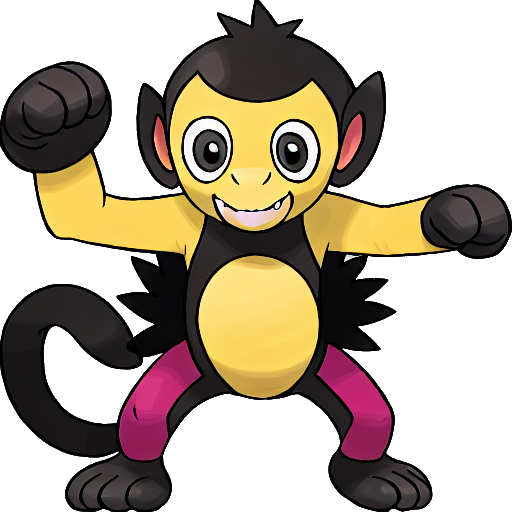Sinjo |
Poing |
COMMON | Sinjo est un petit singe bipède qui a une affinité naturelle pour le type Poing. Il est joueur et curieux, mais il ne possède pas encore de caractéristique physique particulière. | |
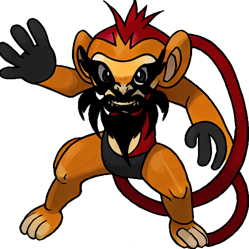Pyromate |
Poing |
Feu |
COMMON | Pyromate porte un masque tribal qui peut s'enflammer, lui conférant le type Feu. Il utilise les flammes pour se protéger et attaquer. |
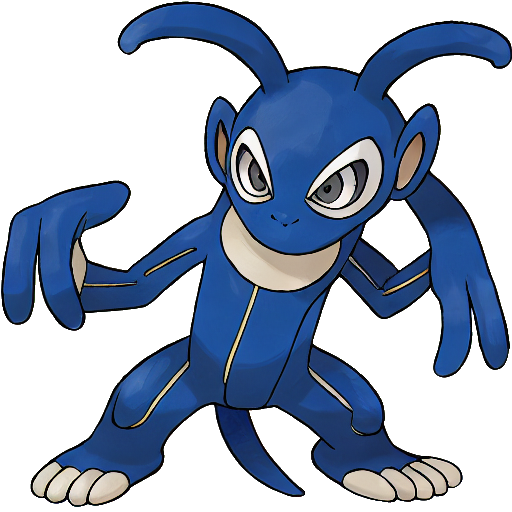Ominidro |
Poing |
Eau |
COMMON | Ominidro a développé des membranes entre ses doigts, lui permettant de nager rapidement et d'utiliser le type Eau pour se défendre et chasser. |
| Quaterrocit | Poing |
Terre |
COMMON | Quaterrocit porte une armure rocheuse naturelle, lui conférant le type Terre. Cette armure le protège des attaques et lui permet de creuser des tunnels. |
| Ventisinge | Poing |
Air |
COMMON | Ventisinge a développé des ailes légères sur son dos, ce qui lui permet de planer et de se déplacer rapidement dans les airs. |
| Marinsect | Eau |
POWER | Marinsect est une petite créature marine qui ressemble à un calmar ou à une pieuvre. Il a de longs tentacules et une peau bleue ressemblant à une combinaison de plongée. | |
| Océalithe | Eau |
Fantôme |
POWER | Océalithe a développé une capacité unique à devenir transparent et à se fondre dans son environnement, lui conférant le type Fantôme. Il possède des tentacules plus longs et plus puissants pour saisir ses proies. |
| Krakendigo | Eau |
Fantôme |
POWER | Krakendigo a des tentacules extrêmement longs et un corps massif. Sa caractéristique physique unique est la bioluminescence, qui lui permet de créer des illusions lumineuses sous l'eau pour attirer ses proies. |
| Nanorik | Magie |
COMMON | Nanorik est un petit nain médiéval. Il a une barbe longue et broussailleuse et porte un marteau en pierre. | |
| Flamorik | Magie |
Feu |
COMMON | Flamorik a acquis la capacité de créer et de contrôler le feu grâce à son marteau en pierre enchanté. Il a des flammes qui dansent sur sa barbe et une armure en pierre pour se protéger. |
| Ciergeorik | Magie |
Feu |
COMMON | Son marteau en pierre est devenu une forge ambulante, et il peut créer des armes et des armures en feu en utilisant sa puissante magie. Sa barbe est constamment enflammée. |
| Gargoupiet | Terre |
COMMON | Gargoupiet est une petite gargouille en pierre perchée sur un rebord de fenêtre. Il a une peau rocheuse et des yeux brillants. | |
| Gargoutor | Terre |
Air |
COMMON | Gargoutor a développé la capacité de voler en utilisant les ailes en pierre qui se sont formées sur son dos. Il est plus grand et a un corps plus robuste. |
 Gargolyric Gargolyric |
Terre |
Air |
COMMON | Gargolyric possède des ailes en pierre massives et une grande variété de chants et de cris qu'il utilise pour effrayer les intrus. Sa peau est incrustée de gemmes lumineuses. |
| Panéling | Poing |
COMMON | Petit faune avec des jambes de bouc et des cornes courbées. Il est connu pour sa musique joyeuse jouée sur une flûte en bois. | |
| Satyriaon | Poing |
Feu |
COMMON | Satyriaon a développé la capacité de contrôler le feu grâce à sa flûte en bois enchantée. Il joue des mélodies ardentes qui peuvent embraser l'atmosphère autour de lui. |
| Panzéros | Poing |
Feu |
COMMON | Panzéros porte une armure de métal en fusion, forgée à partir de la magie du feu. Ses cornes ont grandi en épées de feu tranchantes. |
| Lughibri | Fantôme |
COMMON | Inspiré du Dullahan, Lughibri ressemble à une petite silhouette spectrale portant un capuchon et tenant une lanterne fantomatique. | |
| Noctéris | Fantôme |
Magie |
COMMON | Noctéris a grandi et porte désormais un manteau lourd fait de tissu enchanté qui le relie à la magie originelle. Sa lanterne fantomatique brille intensément dans l'obscurité. |
| Obsidarque | Fantôme |
Magie |
COMMON | Obsédarque porte une armure en obsidienne contenant sa réserve de magie et sa lanterne est devenue une source de pouvoirs mystiques. |
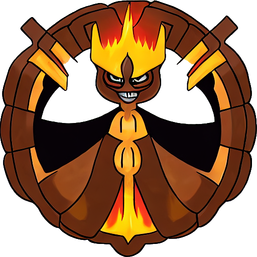Enfancien |
Fantôme |
COMMON | Enfancien est une créature mystérieuse qui se manifeste sous la forme d'un bébé humain. Il est connu pour son apparence trompeuse, car il peut se transformer pour ressembler à un enfant humain. Il erre souvent dans les bois en quête d'attention humaine. Malgré son aspect inoffensif, Enfancien possède des pouvoirs fantômatiques puissants qui lui permettent de se cacher et de se protéger. | |
 Métamorfeu Métamorfeu |
Fantôme |
Feu |
COMMON | Il a développé la capacité de prendre l'apparence d'objets ou de créatures enflammés. Cette créature est capable de manipuler le feu pour se défendre ou pour se camoufler dans des flammes. Son apparence peut varier, mais il conserve toujours une lueur mystérieuse dans ses yeux. |
| Fantôme |
Feu |
COMMON | Il maîtrise parfaitement l'art de la transformation et peut se fondre dans n'importe quel environnement en utilisant ses pouvoirs Fantômes et son contrôle sur le feu. Son apparence est souvent décrite comme éthérée, avec des flammes dansantes qui dansent autour de lui. | |
 Démolure Démolure |
Fantôme |
COMMON | Démolure est une petite créature farceuse qui adore tromper les gens en se cachant dans les ombres. | |
 Malfarceur Malfarceur |
Fantôme |
Feu |
COMMON | Malfarceur est une créature rusée qui porte un masque de flammes. Ses feux follets lui permettent de jouer des tours et de séduire les autres Pokémon. |
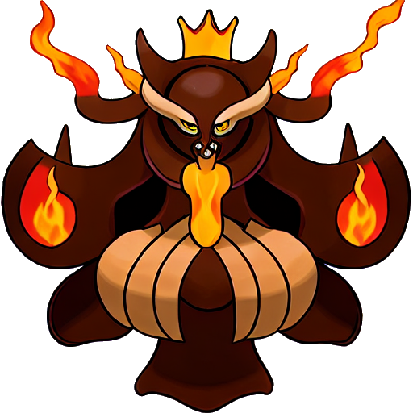Luciferoce |
Fantôme |
Feu |
COMMON | Luciferoce est le seigneur des flammes, couronné de flammes ardentes. Ses pouvoirs pyrokinétiques sont redoutables, et il est capable de brûler tout sur son passage. |
| Majutin | Magie |
COMMON | Majutin est un petit lutin enchanteur, doté d'un chapeau mystique. Majutin est connu pour sa malice et sa capacité à créer des illusions magiques pour tromper ses adversaires. Il aime se faufiler dans les forêts enchantées et jouer des tours aux dresseurs intrépides. | |
| Farféclair | Magie |
Foudre |
COMMON | Farféclair est un farfadet qui continue de maîtriser la magie, mais qui a également acquis le pouvoir de la foudre grâce au bâton qu'il tient dans ses mains. Farféclair est espiègle et aime jouer avec la magie et l'électricité. Il est souvent aperçu près des cascades où il se livre à des danses magiques sous la lumière de la lune. |
| Leprennerre | Magie |
Foudre |
COMMON | Leprennerre a atteint le sommet de sa maîtrise de la magie et de la foudre. Il possède un grand chapeau doré orné d'étoiles scintillantes et son bâton est devenu une arme redoutable qui peut déchaîner des tempêtes de foudre. Leprennerre est respecté pour sa sagesse et est souvent considéré comme un gardien des trésors cachés. |
| Scorpiqure | Poison |
Terre |
POWER | Il a un corps robuste avec une carapace blindée qui le protège des attaques. Ses pinces sont larges et solides, parfaites pour saisir ses proies ou se défendre. Sa queue est équipée d'un dard empoisonné, ce qui en fait un redoutable adversaire en combat. Il se déplace silencieusement et se cache souvent dans les endroits sombres et rocailleux des forêts. |
| Scorpiquant | Poison |
Terre |
COMMON | Il a une carapace renforcée et des piquants encore plus tranchants. Scorpiquant est souvent associé à des territoires toxiques et inhospitaliers. |
| Scorpidard | Poison |
Terre |
COMMON | Sa carapace est ornée de motifs mystérieux et ses piquants peuvent percer la roche la plus dure. Ce robuste scorpion est craint et respecté en tant que gardien des régions arides et désertiques. |
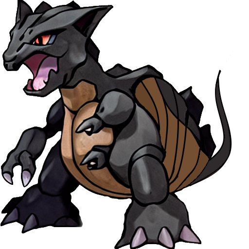Tarasquin |
Dragon |
Terre |
POWER | Il ressemble à une petite créature reptilienne avec une carapace solide. Sa caractéristique physique est une carapace terrestre qui lui permet de creuser dans le sol et de se cacher rapidement. Il préfère les endroits souterrains et les grottes. |
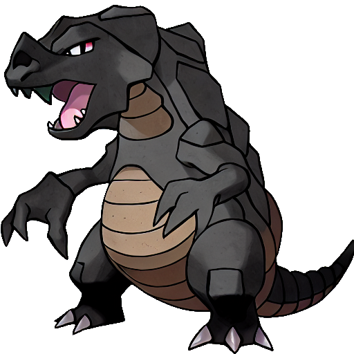Terrasqueur |
Dragon |
Terre |
POWER | Sa carapace terrestre se renforce et prend des nuances de dragon. Il a la capacité de créer des secousses sismiques et des fissures dans le sol. Terrasqueur est connu pour sa résistance et sa force. |
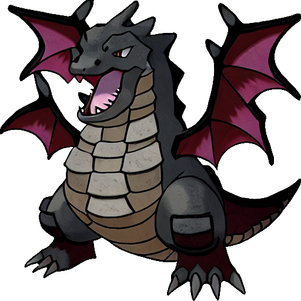Dratasque |
Dragon |
Terre |
POWER | Il ressemble à une créature colossale, à la fois dragon et tarasque. Sa carapace est devenue une armure impénétrable, et il peut déclencher de puissantes tempêtes de sable et de roches. Dratasque est vénéré comme une force naturelle par les habitants des régions désertiques. |
| Vouiglace | Dragon |
Glace |
POWER | Il ressemble à un petit dragon avec des écailles bleues glaciales et des ailes translucides. Ses yeux brillent d'une lueur froide, et il est capable de générer de petites tempêtes de glace pour se protéger ou attaquer. Il est agile et rapide malgré sa taille réduite. |
| Vouigivre | Dragon |
Glace |
POWER | Il grandit en taille et en puissance, développant des crocs acérés et une queue puissante. Ses ailes deviennent plus grandes, lui permettant de voler avec grâce dans les cieux glacés. |
| Vouizzard | Dragon |
Glace |
POWER | Ses écailles scintillantes sont d'un bleu profond. Il est capable de créer des tempêtes de glace massives et de contrôler le froid à volonté. |
| Volidrac | Dragon |
Air |
POWER | Il ressemble à un dragon doté d'écailles argentées et de puissantes ailes. Sa paire d'ailes divinement ornées lui permettent de voler à des altitudes impressionnantes. Les légendes disent que son souffle est capable de purifier l'air autour de lui. |
| Strömdrac | Dragon |
Air |
POWER | En évoluant, ses ailes se transforment en de puissantes ailes d'argent étincelantes, lui permettant de manœuvrer dans les cieux avec grâce et rapidité. Son souffle aérien peut déclencher des tempêtes célestes. |
| Céledrac | Dragon |
Air |
POWER | Dragon céleste avec des ailes impressionnantes, des écailles d'argent et une aura mystique. Il possède désormais une couronne brillante qui lui confère un pouvoir absolu sur les cieux. Il peut contrôler les vents célestes, et sa présence est considérée comme un signe de bonne fortune. |
| Eclagon | Dragon |
Foudre |
POWER | Dragon aux écailles argentées et aux yeux électriques. Sa crête élancée qui parcourt son dos peut emmagasiner de l'énergie électrique. Les légendes disent que son rugissement peut déclencher des tempêtes et des éclairs. |
| Fulgon | Dragon |
Foudre |
POWER | Sa crête s'intensifie, devenant une source constante d'énergie électrique. Il a le pouvoir de contrôler la foudre et les éclairs à sa volonté. Un joyau incrusté dans sa poitrine amplifie ses capacités électriques. |
| Fulgyran | Dragon |
Foudre |
POWER | Ses écailles brillent comme de l'argent pur, et son souffle est un véritable éclair destructeur. Une couronne en forme de foudre lui confère un contrôle absolu sur les tempêtes et les éclairs. |
| Spectragon | Dragon |
Fantôme |
POWER | Dragon spectral translucide, avec des ailes déchirées et une lueur mystique. Il possède une chaîne d'éther enroulée autour de sa queue, symbolisant son lien entre le monde des vivants et celui des esprits. |
| Ombragon | Dragon |
Fantôme |
POWER | Ce dragon possède la capacité de se déplacer entre les deux mondes et de se camoufler dans les ombres. La marque mystique sur son front lui confère un pouvoir sur les esprits. |
| Nécrogon | Dragon |
Fantôme |
POWER | Créature de l'au-delà enveloppée d'une aura spectrale. Ses yeux perçants scrutent l'âme. |
| Toxigon | Dragon |
Poison |
POWER | Dragon serpentiforme avec des écailles toxiques et des crocs venimeux. Sa langue bifide lui permet de détecter les odeurs et les goûts à distance. |
| Venogon | Dragon |
Poison |
POWER | En évoluant, il a développé des ailes et une crête toxique sur son dos. Il est également capable de cracher un venin corrosif sur ses ennemis. |
| Virugon | Dragon |
Poison |
POWER | Dragon massif couvert de piques toxiques et de motifs serpentins. Il a le pouvoir de contrôler les éléments toxiques de son environnement. |
| Kongelling | Dragon |
Eau |
POWER | Petit dragon aquatique qui possède des nageoires et des ailes lui permettant de nager rapidement dans l'eau. La dureté de sa peau le protège des attaques. |
| Kongharde | Dragon |
Eau |
POWER | Ses ailes se sont développées en une envergure impressionnante, lui permettant de voler à grande vitesse malgré sa taille imposante. Sa peau est recouverte d'écailles de dragon durcies davantage. Son souffle lui permet de créer des inondations massives. |
| Kongzilla | Dragon |
Eau |
POWER | Sa peau est si dure qu'elle est presque impénétrable, et ses attaques au souffle sont dévastatrices. |
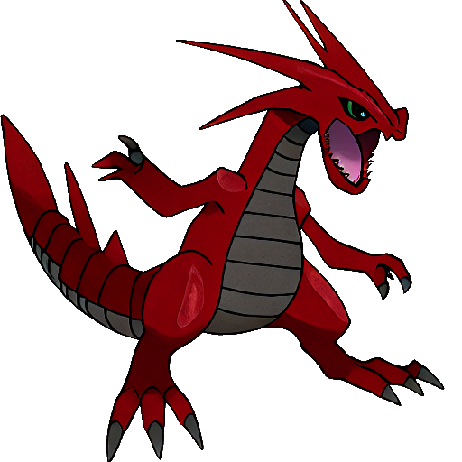Vulcanith |
Dragon |
Feu |
POWER | Petit dragon aux écailles rouges et aux yeux flamboyants. Il est agile et curieux, explorant les environnements chauds et arides. |
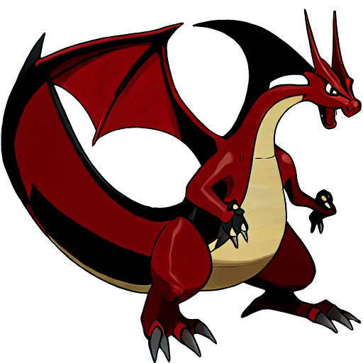Explonith |
Dragon |
Feu |
POWER | Des flammes courent le long de son dos. Il a la capacité de voler et de cracher des flammes encore plus puissantes. |
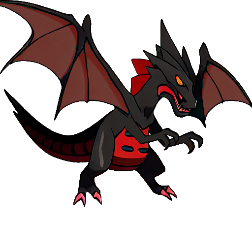Kulshenith |
Dragon |
Feu |
POWER | Dragon aux ailes de feu, il peut provoquer des tempêtes de feu en volant. |
| Drapillon | Dragon |
Magie |
POWER | Dragonneau aux 4 ailes féériques et d'une sagesse ancestrale. |
| Drafée | Dragon |
Magie |
POWER | Une petite gemme incrustée sur son front qui brille intensément lorsqu'il utilise sa magie. Cette gemme lui permet de canaliser et de contrôler ses pouvoirs magiques. |
| Fantagon | Dragon |
Magie |
POWER | Il est maintenant recouvert de gemmes magiques, lui permettant de canalyser sa magie et son souffle féérique. |
| Cougon | Dragon |
Poing |
POWER | Dragon de combat énervé. |
| Ragon | Dragon |
Poing |
POWER | Dragon encore plus énervé avec des bandeaux couvrant ses cicactrices. |
| Pandragon | Dragon |
Poing |
POWER | D'une férocité rarement égalée, il entre dans une colère terrible lui infligeant de nombreux maux. Il porte un bandeau sur le crâne et une ceinture de cuir, lui permettant de se canaliser. |
 Dahclair Dahclair |
Foudre |
POWER | Quadrupède similaire à un cerf avec une fourrure épaisse de couleur blanc argenté. Il a des cornes recourbées et des pattes robustes pour se déplacer dans les montagnes enneigées. Il porte une amulette d'éclair autour de son cou, qui lui permet de maîtriser la foudre. | |
 Wendirago Wendirago |
Foudre |
Glace |
POWER | Sa fourrure blanche et argentée et ses cornes sont devenues plus grandes et plus ornées. Il porte une amulette d'éclair et de glace qui brille intensément. Il peut créer des tempêtes de neige électrifiées. Ses yeux émettent des éclairs vifs, et sa présence est impressionnante. |
 Furfoudre Furfoudre |
Foudre |
Air |
POWER | Sa fourrure blanche et argentée est devenue noire et rouge. Ce prince des Enfers peut créer des tempêtes de feu et d'orage. |
| Greauc'h | Eau |
Magie |
COMMON | Fée bretonne liée à l'eau, elle est souvent apparentée aux ogres et aux sorcières. Réputée vivre dans des cavernes, sous le sable ou sous la mer, la groac'h a du pouvoir sur les éléments de la nature et maîtrise la métamorphose. |
| Ô'Djinn | Eau |
Magie |
COMMON | Être très intelligent, il possède un bâton mystique lui permettant un contrôle total de sa magie. Grâce à sa faculté de métamorphose, il a développer des palmes lui permettant ainsi de nager comme bon lui semble. |
 Piéti Piéti |
Poing |
COMMON | Ce petit yéti aux grands pieds aime se cacher pour ne pas être chassé. Il possède une fourrure épaisse qui le protège des fortes températures | |
 Basamuscle Basamuscle |
Poing |
Foudre |
COMMON | Ce monstre féroce est un grand yéti à la force musculaire impressionante. Il protège les preux villageois qui le cache, mais une simple tape amicale est d'une violence incommensurable. |
| Mantigivre | Poison |
Glace |
COMMON | Manticore au dos recouvert d'épines empoisonnées et froid comme la glace. |
| Glaciffon | Poison |
Glace |
COMMON | Griffon dont la langue est entièrement enduite de poison mortel. Il a les pattes blanches évoquant le givre et le froid glacial des régions dans lesquelles il vit. |
| Chimeson | Poison |
Glace |
COMMON | Chimère de poison et de glace |
| Greleuvre | Poison |
Glace |
COMMON | Ses yeux sont d'un bleu glacial perçants, et sa langue bifide est d'un violet profond. Cette couleuvre possède une morsure venimeuse, mais est surtout connu pour grignoter constamment de petits glaçons. Lorsqu'il se déplace, il laisse derrière lui une fine traînée de glace qui se dissipe lentement. |
| Cryobra | Poison |
Glace |
COMMON | Son corps est recouvert de motifs complexes rappelant des cristaux de glace. Sa langue est désormais bleue, et elle peut projeter un souffle glacial capable de congeler ses proies instantanément. |
| Pankara | Poing |
COMMON | Il est connu pour sa grande force physique et sa maîtrise des techniques de combat au poing. Son pelage est blanc avec des taches noires autour des yeux et des oreilles. Pankara possède de puissantes griffes et une musculature développée, ce qui en fait un combattant redoutable. | |
| Panjudo | Poing |
Foudre |
COMMON | Ses griffes sont chargées d'énergie électrique, ce qui augmente encore sa puissance au combat. Panjudo a des marques électriques jaunes sur son pelage blanc. |
| Pangfu | Poing |
Foudre |
COMMON | Ses poings sont entourés d'une aura électrique qui peut être libérée lors de ses attaques. Il porte des gants spéciaux qui amplifient encore ses capacités au poing et à l'électrochoc. |
| Lingon | Dragon |
Métal |
POWER | Il a une apparence draconique avec des écailles en acier et des ailes en métal. Il porte un petit lingot de métal dans sa griffe. |
| Martagon | Dragon |
Métal |
POWER | Il a une armure en métal qui le recouvre et lui donne une grande résistance. Il porte un marteau de forgeron en métal, montrant sa maîtrise de l'élément métallique. |
| Sabragon | Dragon |
Métal |
POWER | Ses écailles reflètent la lumière comme de l'acier poli, et il a façonné son marteau en une gigantesque épée de métal. Il est réputé pour être indestructible, et il est craint pour sa force colossale. |
| Elfero | Magie |
COMMON | Il incarne la grâce et la magie des elfes. Sa peau est d'un vert doux et ses cheveux sont longs et argentés. Il porte un collier enchanté qui amplifie ses pouvoirs magiques. Elfero est doué pour l'utilisation de sorts magiques, notamment des sorts de guérison et de contrôle de la nature. | |
| Sorcelarc | Magie |
Foudre |
COMMON | Il a la capacité de lancer des flèches électriques avec précision grâce à son arc magique. Ses flèches sont chargées d'énergie électrique, ce qui les rend plus puissantes. |
| Elfoudre | Magie |
Foudre |
COMMON | Sa peau est d'un vert profond, et il possède une aura électrique qui l'entoure en permanence. Elfoudre est désormais capable de créer des tempêtes électriques. |
| Quaternix | Eau |
Feu |
COMMON | Cette créature est la fusion d'une hydre à 4 têtes et d'un phénix. Il possède un corps serpentiforme doté d'écailles bleues luisantes, couronné de flammes ardentes. |
| Sixternix | Eau |
Feu |
COMMON | Il a maintenant 6 têtes et des ailes enflammés plus robustes lui permettant de fondre les écailles les plus dures. |
| Octernix | Eau |
Feu |
COMMON | Ses 8 têtes peuvent chacune envoyer un puissant jet d'eau, tandis que ses ailes font fondre un château entier. |
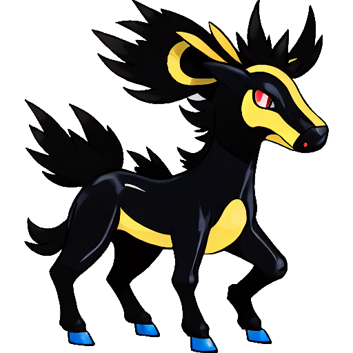Cavataille |
Fantôme |
Foudre |
COMMON | Ce cheval de guerre est chargé d'énergie électrique. Il porte un ancien fer à cheval qui a la capacité de canaliser la puissance de la foudre. |
 Fulmiguerre Fulmiguerre |
Fantôme |
Foudre |
COMMON | Ses os semblent parcourus par des éclairs constants. Des éclairs dansent autour de lui et il a la capacité de générer des orages lorsqu'il galope. Ses fers à cheval se sont dispersés sur toute sa colonne vertébrale le recouvrant d'une robuste armure électrique. |
 Tonneresprit Tonneresprit |
Fantôme |
Foudre |
COMMON | Il est une créature majestueuse et terrifiante qui incarne la puissance des tempêtes. Son corps est entièrement enveloppé d'éclairs et de nuages noirs tourbillonnants. Il dégage une aura sinistre qui peut électriser tout ce qui s'approche de lui. Les éclairs se matérialisent autour de lui sous forme de lances et d'épées. Il possède un casque orné d'éclairs, qui amplifie sa connexion aux éléments électriques. |
| Canirdoba | Feu |
Glace |
COMMON | Chien en armure vétuste, figée dans la glace. Son pelage est enflammé, mais ses flammes sont d'un bleu glacial. Il porte une épée de glace enchantée qui est constamment en train de fondre et de geler à nouveau. |
| Werdoba | Feu |
Glace |
COMMON | Cette imposante créature ressemble à un loup en armure de glace brûlante. Son souffle chaud est si intense qu'il fait fondre la glace autour de lui. Il porte une hache de guerre enflammée avec une lame glacée. |
 Muscalièvre Muscalièvre |
Feu |
POWER | Ce petit animal possède le corps d'une belette, un museau de taupe, des pattes de lièvres et une queue d'écureuil. | |
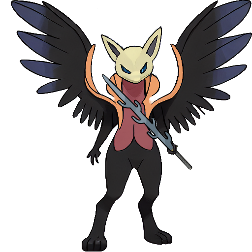Renfield |
Air |
Fantôme |
POWER | Renard avec des grandes ailes d'aigles aux yeux d'un noir profond, et des pattes de lièvres. |
 Licère Licère |
Air |
Feu |
POWER | Lièvre avec des cornes de cerf, des ailes majestueuses de corbeau et 2 dents de sabre. |
| Lézombre | Fantôme |
Poison |
COMMON | Ce petit lézard a des écailles sombres et des yeux mystérieux. Son venin est dangereux mais pas mortel. |
| Serpenigre | Fantôme |
Poison |
COMMON | Ce serpent est long et agile. Il porte une cape maudite qui lui confère la possibilité de se cacher dans le noir. Son corps est strié de motifs sombres. |
 Maréchinol Maréchinol |
Poison |
Eau |
COMMON | Maréchinol est un Pokémon aquatique qui ressemble à une étoile de mer de couleur bleue avec des motifs violets. Il possède sept bras couverts d'épines pointues. Sa peau est toxique, lui permettant de repousser les prédateurs en les empoisonnant. Il se déplace lentement sur le fond marin en quête de proies. |
 Échinomare Échinomare |
Poison |
Eau |
COMMON | Échinomare est une évolution majestueuse de Maréchinol. Ses septs bras sont dotés de petites étoiles de mers. Échinomare est capable de nager rapidement en faisant tourner ses étoiles de mers, chassant des proies plus grandes dans les eaux côtières. |
 Océchinoir Océchinoir |
Poison |
Eau |
COMMON | Cette pieuvre abyssale géante est entièrement noire, et ses épines sont particulièrement dangereuses. Océchinoir réside dans les profondeurs océaniques, loin des côtes, et est rarement vu par les humains. |
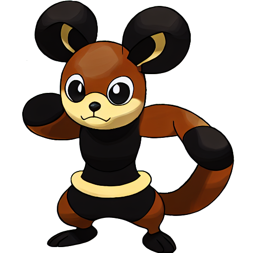Kangbagarre |
Fantôme |
Poing |
COMMON | |
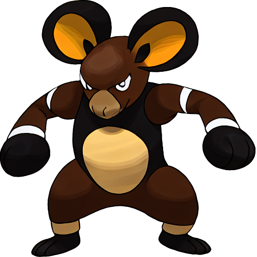Kangbaston |
Fantôme |
Poing |
COMMON | |
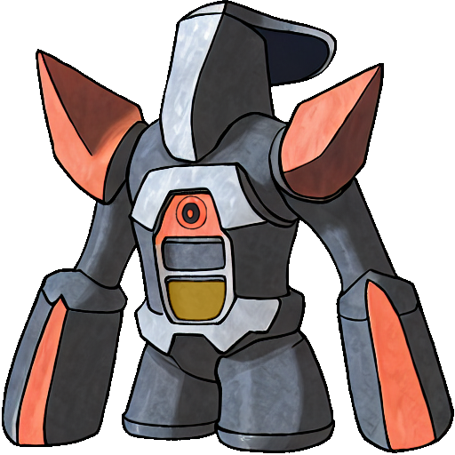Minilem |
Feu |
Métal |
COMMON | Petit golem de feu |
 Mégalem Mégalem |
Feu |
Métal |
COMMON | Moyen golem de feu |
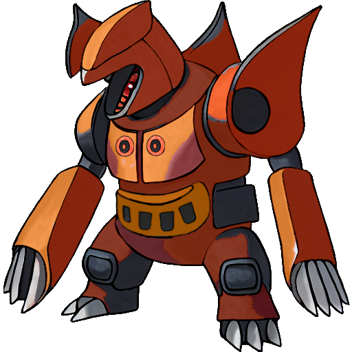Hyperlem |
Feu |
Métal |
COMMON | Grand golem de feu |
 Archéo Archéo |
 Néant Néant |
COMMON | Dieu du chaos | |
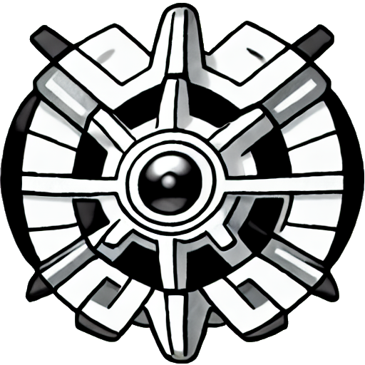Chaotic |
Néant |
Métal |
COMMON | |
| Aetheryx | Néant |
Dragon |
COMMON | Dragon venu du néant. |
| Phlogiston | Néant |
Feu |
COMMON | Il incarne l'essence du feu pur, ses flammes émettant une énergie ancienne. |
| Vaporol | Néant |
Air |
COMMON | Il émerge des brumes éthérées, prenant la forme d'un spectre aérien insaisissable. |
| Néptuléen | Néant |
Eau |
COMMON | Il règne sur les eaux troubles venues d'un autre monde, évoquant les énigmes d'océans inexplorés. |
| Géonarque | Néant |
Terre |
COMMON | Il règne sur les secousses telluriques, son corps massif symbolisant la puissance du néant. |
| Mystôme | Néant |
Fantôme |
COMMON | Il se déplace à travers les ombres, laissant derrière lui une trace de mystère et d'obscurité. |
| Néon | Néant |
Foudre |
COMMON | Il crée une tempête électrique luminescente, ses éclairs ressemblant à des néons dans la nuit. |
| Frosthral | Néant |
Glace |
COMMON | Il émane une aura gelée d'une nature éthérée, sa présence évoquant la froideur transcendante et gelant toute créature sur place. |
| Toxide | Néant |
Poison |
COMMON | Il projette des illusions empoisonnées, son aura toxique évoquant des rêves cauchemardesques. |
| Arkhan | Néant |
Magie |
COMMON | Il canalise les mystères magiques du néant, son aura évoquant une puissance arcanique abyssale. |
| Closmach | Néant |
Poing |
COMMON |